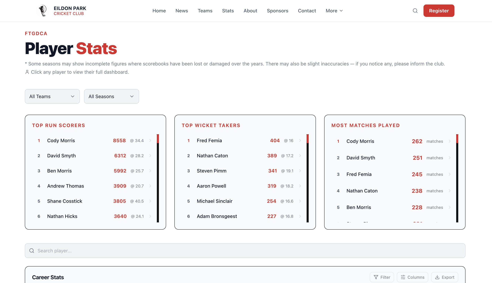
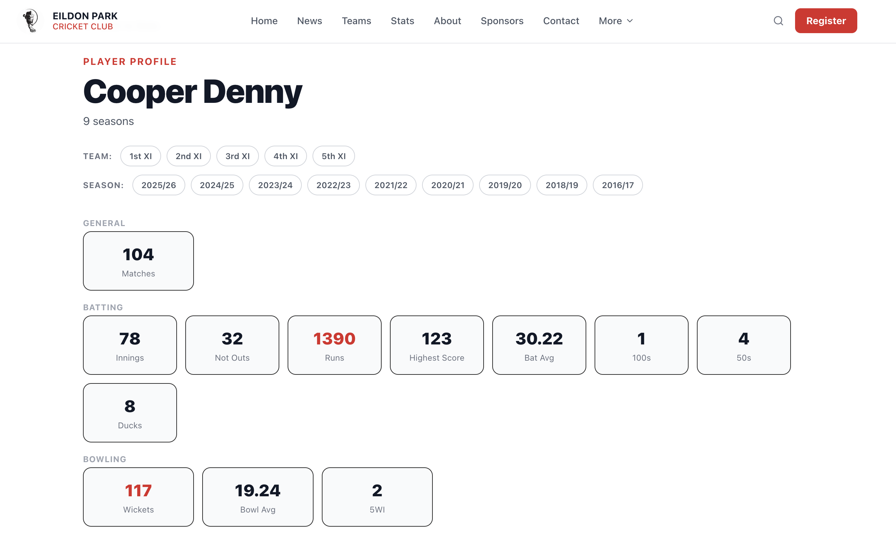
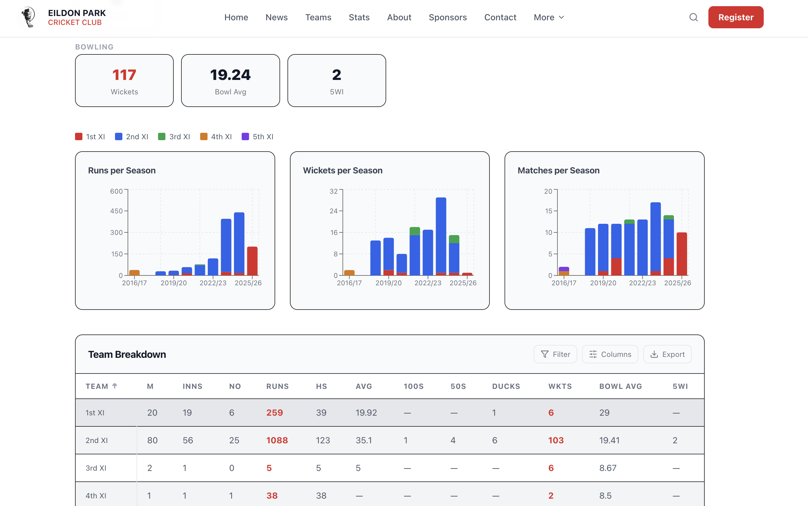

Full club website built with Claude Code, featuring a historical player stats dashboard that automatically populates all senior club records from compiled historical data



Built the full Eildon Park Cricket Club website using Claude Code, combining web development with sports data engineering to create a resource for the club's members and history. The centrepiece is an interactive player stats dashboard that surfaces historical records automatically from compiled season-by-season data.
The stats section compiles historical batting and bowling data across all senior seasons, automatically calculating and displaying club records including:
The entire website was developed using Claude Code as the primary development tool, enabling rapid iteration from initial design through to a production-ready site deployed on Netlify. This project demonstrates how AI-assisted development can accelerate the delivery of real-world community projects.
Historical statistics were compiled from club records spanning multiple seasons, cleaned and structured to enable the dashboard to automatically derive records and aggregates without manual maintenance each season.